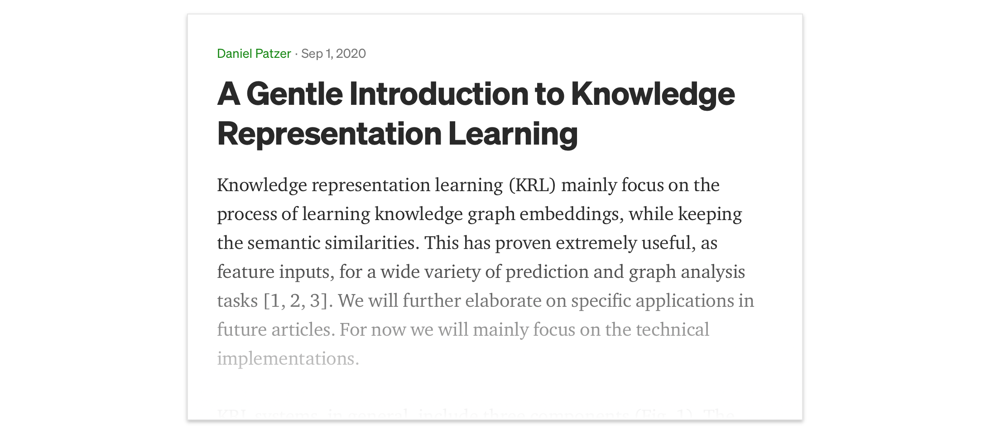

Semantic Knowledge 💬
Table of Content:
Abstract
The demand for clinical decision support systems in medicine and self-diagnostic symptom checkers has substantially increased in recent years. They depend on large biomedical databases, such as knowledge graphs (KG), to derive inferences. KGs express medical concepts as connections between multiple nodes in a graph. Most biomedical KGs are incomplete and miss relationships between nodes.
This work employed a deep medical reasoning system to infer missing relationships from a biomedical KG by synthesizing existing information. A question answering (QA) framework is conducted to explicitly infer relationships that are not directly linked in the KG. An embedding-based model was trained to answer questions based on semantic similarities. We were able to achieve high accuracy scores using the statistic metrics Hits@k and MRR. Further investigations revealed limitations when facing more complex chains of reasoning and the lack of transparency in cases of misclassifications. Following the latest research, we were able to overcome these limitations by using a path-based, multi-hop reinforcement learning (RL) approach. We trained the RL agent and presented its ability to use the symbolic compositionality of relations in a qualitative analysis. Given a question, the agent 'walks' on the graph by choosing relations at each step. Thus, providing an explainable reasoning path. Such computational methods can help in a variety of downstream tasks, such as generate hypotheses of potential protein associations or predict explainable interactions in drug-symptom networks.
Biomedical Knowledge Graphs
Graph embeddings
Graph embeddings mainly focuses on the process of learning low dimensional distributed embedding for entities and relations. Current literature uses real-valued point-wise space including vector, matrix and tensor space, while other kinds of space such as complex vector space, Gaussian space, and manifold are utilized as well. Models used can be categorized in translational distance an semantic matching. For further technical details please check out my corresponding blog post on Medium.
Path-based Reasoning in Knowledge Graphs
Learning embeddings of entities and relations using tensor factorization or neural methods to optimize a predefined scoring function between facts in the KG, achieves outstanding results on standard benchmark datasets. However, these methods cannot capture chains of reasoning expressed by paths in the KG and cannot capture the full underlying semantics. Path-based models address these problems by scoring facts based either on random walks over the KBs (path ranking) or by encoding entire paths in a vector space (path encoding).
Framework
The framework based on a classical two component RL scenario modeled as a Markov Decision Process. Lower part: The environment incorporates to the whole KG. Upper part: A representation of the policy network, which outputs the probabilities for choosing the next action. At each step t, the agent interacts with the environment and learns selecting a relation link to extend the reasoning path.
Policy Network
The policy network outputs a probability distribution over possible actions. For the sake of simplicity, the model can be divided into two parts. A path encoder (left) and the Action Space At (right), which in the end gets combined using scalar multiplication. The path encoder contains global context and the search history. Wheres A_t is a matrix containing all available actions. The scalar product combines both and outputs a probability distribution over all available actions. Where we then use a categorical distribution to select a specific action A_t